【论文阅读】Metapath Aggregated Graph Neural Network for Heterogeneous Graph Embedding
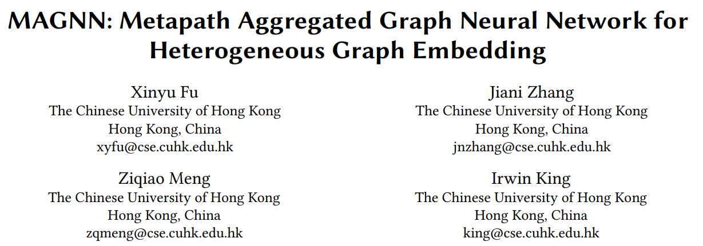
论文标题：MAGNN: 用于异构图嵌入的元路径聚合图神经网络
论文链接：https://arxiv.org/pdf/2002.01680.pdf
代码链接：https://github.com/cynricfu/MAGNN
论文发表：WWW 2020
一、引言
本文提出MAGNN模型，围绕元路径的聚合问题展开。元路径聚合主要有两部分，元路径内部的聚合、元路径之间的聚合。同时，在建模过程中结合了节点的属性信息。
现有的基于元路径的嵌入学习方法有以下的局限性：
- 忽略了节点的属性信息，不能很好的处理节点属性特征丰富的异质图。例如 metapath2vec, ESim, HIN2vec, HERec 。
- 舍弃了元路径内部的节点信息，只考虑元路径的起始节点和末尾节点，造成信息损失。例如 HERec, HAN 。
- 只依赖于单个路径，因此需要人工选择元路径，丢失了来自其他元路径的部分信息，导致性能不佳。例如 metapath2vec 。
为解决上述问题，本文提出 MAGNN: Metapath Aggregated Graph Neural Network for Heterogeneous Graph Embedding
二、定义和符号
异质图、元路径、元路径实例不在赘述。 相关图示如下：
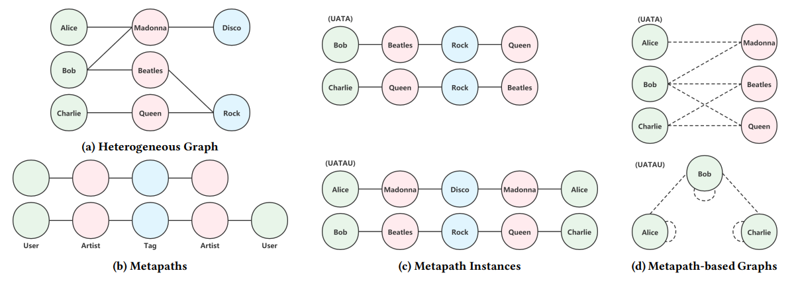
Metapath-based Neighbor： 给定异质图中的一个元路径 \(P\) ，节点 \(v\) 的 metapath-based 邻居 \(\mathcal{N}^P_v\) 为和 \(v\) 相连的遵循元路径 \(P\) 的模式的节点集合。由两个不同的元路径实例与 \(v\) 相连的同一个邻居节点，被视为 \(\mathcal{N}^P_v\) 中的两个节点。另外，如果元路径 \(P\) 是对称的，\(\mathcal{N}^P_v\) 中也包含节点 \(v\) 自身。
Metapath-based Graph： 给定异质图 \(\mathcal{G}\) 中的元路径 \(P\) ，基于元路径的图 \(\mathcal{G}^P\) 由原始图 \(\mathcal{G}\) 中所有的基于元路径 \(P\) 的邻居点对组成（去掉了元路径实例的中间节点，只保留了元路径实例两端的节点，并在两点间建立起连边）。如果元路径 \(P\) 是对称的，则 \(\mathcal{G}^P\) 是同质图。如上图(d)所示。
异质图嵌入： 给定 \(\mathcal{G}=(\mathcal{V}, \mathcal{E} )\) 和节点属性矩阵 \(\mathbf{X} _ {A_i} \in \mathbb{R}^{ | \mathcal{V} \_ {A_i} | \times d_{A_i} }\) ，其中 \(A_i\) 表示节点类型，异质图嵌入学习的目的是从图中捕获到丰富的结构信息和语义信息，从而为每个节点学习到 \(d\) 维的表示 \(\mathbf{h}_v\in \mathbb{R}^d\) 。
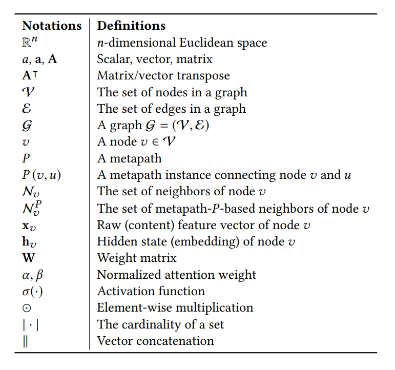
三、方法
MAGNN由节点内容转换、元路径内部聚合、元路径间的聚合三部分组成，下图展示了一个节点的嵌入生成过程。
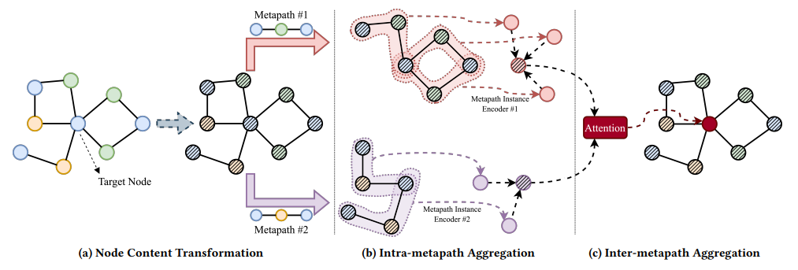
1. Node Content Transformation
异质图中的不同类型的节点有着不同的属性，因此不同类型的节点的特征向量可能有着不同的维度，即使碰巧维度相同，特征向量也应该属于不同的特征空间。
为了方便统一处理，需要将这些不同类型的节点的特征映射到同一个隐层的向量空间中。具体方法就是对每种类型的节点都使用一个特定的线性转换，来将节点的特征向量转换到同一个隐层的特征空间中。对于类别为 \(A\in \mathcal{A}\) 的节点 \(v\in \mathcal{V} \_ {A}\) ，进行如下的转换： \[ \mathbf{h}\_{v}^{\prime}=\mathbf{W}\_{A} \cdot \mathbf{x}\_{v}^{A} \] 其中 \(x_v\in \mathbb{R}^{d_A}\) 是原始的特征向量， \(\mathbf{h}^{\prime}_v\in \mathbb{R}^{d^{\prime}}\) 是映射后的节点 \(v\) 的特征向量。 \(W_A\in \mathbb{R}^{d^{\prime}\times d_A}\) 是对于类型为 \(A\) 的节点的参数化权重矩阵。
2. Intra-metapath Aggregation
给定元路径 \(P\)，元路径内部聚合层通过对 \(P\) 的元路径实例编码，可以学习到 目标节点、基于元路径的邻居节点、节点之间的上下文 中嵌入的结构信息和语义信息。
定义连接目标节点 \(v\) 和它的 metapath-based 邻居节点 \(u\in \mathcal{N}^P_v\) 为 \(P(v, u)\) 。
定义 \(P(v, u)\) 的内部节点为 \({ \{m^{P(v, u)} \}}=P(v, u)\setminus{ \{u, v\} }\) 。
元路径内部聚合采用了特殊的元路径实例编码器（metapath instance encoder）将元路径实例中的所有节点的特征转换成向量 \(\mathbf{h}\_{P(v,u)}\in \mathbb{R}^{d^{\prime}}\) : \[ \mathbf{h}\_{P(v, u)}=f_{\theta}(P(v, u))=f_{\theta}\left(\mathbf{h}\_{v}^{\prime}, \mathbf{h}\_{u}^{\prime},\left\{\mathbf{h}\_{t}^{\prime}, \forall t \in \left\{m^{P(v, u)}\right \}\right \} \right) \] 节点 \(v, u\) 之间可能存在多个元路径实例，第4小节介绍了限定的 metapath instance encoder 的几种选择。
接着使用图注意力层（graph attention layer）加权聚合针对目标节点 \(v\) 的且元路径为 \(P\) 的多个元路径实例： \[ \begin{aligned} e_{v u}^{P} & =\operatorname{LeakyReLU}\left(\mathbf{a}\_{P}^{\top} \cdot\left[\mathbf{h}_{v}^{\prime} \| \mathbf{h}\_{P(v, u)}\right]\right), \\ \alpha_{v u}^{P} & =\frac{\exp \left(e_{v u}^{P}\right)} {\sum_{s \in N_{v}^{P}} \exp \left(e_{v s}^{P}\right)}, \\ \mathbf{h}\_{v}^{P} & =\sigma\left(\sum_{u \in \mathcal{N}\_{v}^{P}} \alpha_{v u}^{P} \cdot \mathbf{h}\_{P(v, u)}\right) . \end{aligned} \] 其中 \(a_P\in \mathbb{R}^{2d^{\prime}}\) 是元路径 \(P\) 的参数化的注意力向量。\(e^P_{vu}\) 表示元路径实例 \(P(v, u)\) 对节点 \(v\) 的重要性，然后使用 softmax 进行了归一化，然后使用归一化后的注意力系数对和节点 \(v\) 相关的元路径实例的表示进行加权求和。最后再经过一个激活函数。
上述的注意力机制可以扩展成多头的（multi-heads），这有助于学习过程的稳定，并且可以减小图的异质性带来的高方差： \[ \mathbf{h}_{v}^{P}=\|_{k=1}^{K} \sigma\left(\sum_{u \in N_{v}^{P}}\left[\alpha_{v u}^{P}\right]_{k} \cdot \mathbf{h}_{P(v, u)}\right) \]
总结： 给出映射后的特征向量 \(h^{\prime}_u\in \mathbb{R}^{d^{\prime}}, \forall u\in \mathcal{V}\)，以及一组元路径 \(\mathcal{P}_A={ \{P_1, P_2, ..., P_M\} }\)。内部元路径聚合为目标节点 \(v\) 生成 \(M\) 个针对特定元路径的向量表示，记为 \({ \{h^{P_1}_v,h^{P_2}_v, ..., h^{P_M}_v \} }\)，每个 \(h^{P_i}_v\in \mathbb{R}^{d{\prime}}\)（假定K=1）都表示了节点 \(v\) 中隐含的一种语义信息。
3. Inter-metapath Aggregation
使用元路径间的聚合层结合所有元路径的语义信息。
从上一步可知，对于类型为 \(A\) 的节点，生成了 \(|\mathcal{V}_A|\) 组隐层向量：\({ \{h^{P_1}_v, h^{P_2}_v, ..., h^{P_M}_v\} }, v\in \mathcal{V}_A\)，\(M\) 是 \(A\) 类型节点的元路径数目。使用注意力机制为不同的元路径分配不同的权重。
首先，针对每条元路径 \(P_i\in \mathcal{P}_A\) ，对所有类型为 \(A\) 的节点在特定元路径下的节点向量进行转换，然后取平均： \[ \mathbf{s}_{P_{i}}=\frac{1}{\left|\mathcal{V}_{A}\right|} \sum_{v \in \mathcal{V}_{A}} \tanh \left(\mathbf{M}_{A} \cdot \mathbf{h}_{v}^{P_{i}}+\mathbf{b}_{A}\right) \] 其中 \(M_A\in \mathbb{R}^{d_m\times d^{'}}, b_A\in \mathbb{R}^{d_m}\) 为可学习到的参数。
然后使用注意力机制混合特定元路径下的节点 \(v\) 的特征向量： \[ \begin{array}{l} e_{P_{i}}=\mathbf{q}_{A}^{\top} \cdot \mathbf{s}_{P_{i}}, \\ \beta_{P_{i}}=\frac{\exp \left(e_{P_{i}}\right)}{\sum_{P \in \mathcal{P}_{A}} \exp \left(e_{P}\right)}, \\ \mathbf{h}_{v}^{\mathcal{P}_{A}}=\sum_{P \in \mathcal{P}_{A}} \beta_{P} \cdot \mathbf{h}_{v}^{P} \end{array} \] 其中 \(q_A\in \mathbb{R}^{d_m}\) 为参数化的针对 \(A\) 类型节点的注意力向量。\(\beta_{P_i}\) 可解释为元路径 \(P_i\) 对于 \(A\) 类型节点的重要性。使用这个注意力系数对节点 \(v\) 的所有针对特定元路径的向量进行加权求和。
最后，MAGNN使用线性转换和一层非线性函数，将节点嵌入映射到输出所需维度的向量空间： \[ \mathbf{h}_{v}=\sigma\left(\mathbf{W}_{o} \cdot \mathbf{h}_{v}^{\mathcal{P}_{A}}\right) \] 其中 \(W_o\in \mathbb{R}^{d_o\times d^{\prime}}\) 是权重矩阵，\(\sigma(\cdot)\) 是激活函数。
这个映射针对具体任务有所不同，可以看成是用于节点分类的线性分类器，也可看成是带有节点间相似度度量的空间投影，可用于链接预测。
4. Metapath Instance Encoders
本节对应第2小节中的元路径实例编码函数 \(f_{\theta}\) ，作者给出了三个候选的编码函数： 1. Mean encoder： \[ \mathbf{h}_{P(v, u)}=\operatorname{MEAN}\left(\left\{\mathbf{h}_{t}^{\prime}, \forall t \in P(v, u)\right\}\right) \] 2. Linear encoder： 是 mean encoder 的扩展，区别在于添加了一个线性转换。 \[ \mathbf{h}_{P(v, u)}=\mathbf{W}_{P} \cdot \operatorname{MEAN}\left(\left\{\mathbf{h}_{t}^{\prime}, \forall t \in P(v, u)\right\}\right) \] 3. Relational rotation encoder： 基于在复杂空间的关系旋转（relation rotation）的元路径实例编码器。这一操作是RotatE提出的，原文做的是知识图谱的嵌入学习。
mean encoder 和 linear encoder 将元路径实例看作了一个集合，忽视了元路径序列结构中嵌入的信息。关系旋转的方法提供了建模这一类知识的方法。
给定 \(P(v, u)=(t_0, t_1, ..., t_n), t_0=u, t_n=v\)，\(R_i\) 为节点 \(t_{i-1}, t_i\) 之间的关系。令 \(\mathbf{r}_i\) 为 \(R_i\) 的向量表示。Relational rotation encoder可形式化为： \[ \begin{array}{l} \mathbf{o}_{0}=\mathbf{h}_{t_{0}}^{\prime}=\mathbf{h}_{u}^{\prime} \\ \mathbf{o}_{i}=\mathbf{h}_{t_{i}}^{\prime}+\mathbf{o}_{i-1} \odot \mathbf{r}_{i}, \\ \mathbf{h}_{P(v, u)}=\frac{\mathbf{o}_{n}}{n+1} \end{array} \] 其中，\(\mathbf{h}^{\prime}_{t_i}, \mathbf{r}_i\) 是复杂的向量，\(\odot\) 表示元素间乘积。可将 \(d^{\prime}\) 维的真实向量 \(\mathbf{h}_{P(v,u)}\) 看成是一个复杂的向量，它的前 \(d^{\prime}/2\) 维是真实的部分，后 \(d^{\prime}/2\) 为虚构的部分。
MAGNN前向传播算法如下：
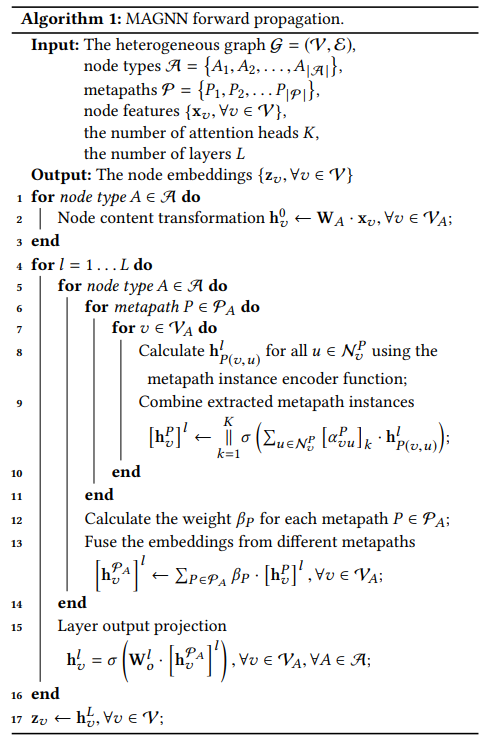
5. 训练
经过上述的三个部分，得到了最终的节点表示，可用于下游任务。
由于不同任务的特点不同，而且不一定能得到节点标签。因此为MAGNN设计了两种学习范式：半监督学习、无监督学习。 1. 半监督学习
最小化交叉熵损失： \[ \mathcal{L} = -\sum_{v \in \mathcal{V}_{L}} \sum_{c=1}^{C} \mathrm{y}_{v}[c]\cdot \log{h_v}[c] \] 其中，\(\mathcal{V}_L\) 是有标签的节点集合，\(C\) 是类别数目，\(\mathbf{y}_v\) 是节点 \(v\) 的 one-hot 向量，\(\mathbf{h}_v\) 是模型输出的节点 \(v\) 的向量表示。
- 无监督学习
使用负采样技术，最小化如下的损失函数： \[ \mathcal{L} = - \sum_{(u,v) \in \Omega} \log \sigma (\mathbf{h}_u^\mathsf{T} \cdot \mathbf{h}_v) - \sum_{(u^{\prime},v^{\prime}) \in \Omega ^ {-}} \log \sigma ( - \mathbf{h}_{u^{\prime}}^\mathsf{T} \cdot \mathbf{h}_{v^{\prime}}) \] 其中，\(\Omega\) 是正样本集合，\(\Omega^{-}\) 是负样本集合。
四、实验
1.数据集
采用三个数据集IMDB，DBLP和Last.fm。数据集统计信息如下：
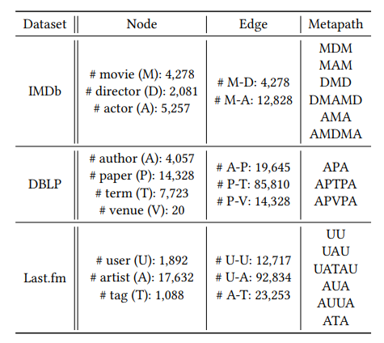
2.实验结果
- 节点分类实验结果
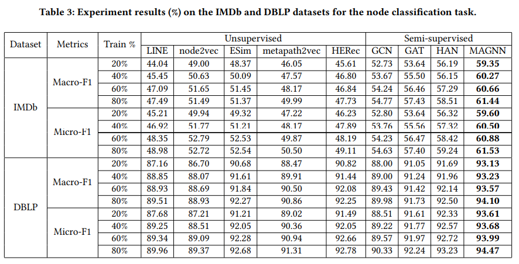
- 节点聚类实验结果
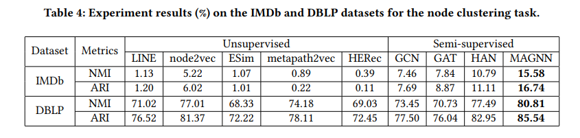
- 链路预测实验结果
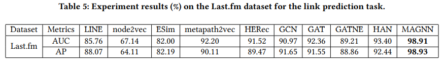
3. 消融实验
- \(\mathrm{MAGNN} _{rot}\) 使用了relation rotation encoder，作为参考模型；
- \(\mathrm{MAGNN} _{feat}\) 没有使用节点内容特征；
- \(\mathrm{MAGNN} _{nb}\) 只考虑了基于元路径的邻居；
- \(\mathrm{MAGNN} _{sm}\) 考虑了单个最好的元路径；
- \(\mathrm{MAGNN} _{avg}\) 使用了mean对元路径实例进行编码；
- \(\mathrm{MAGNN} _{linear}\) 使用了linear对元路径实例进行编码。
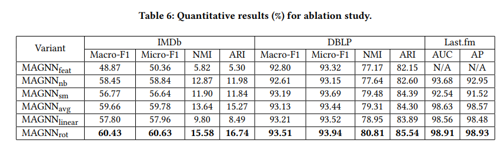
\(\mathrm{MAGNN} _{nb}\) 和 \(\mathrm{MAGNN} _{avg}\) , \(\mathrm{MAGNN} _{linear}\) , \(\mathrm{MAGNN} _{rot}\) 相比，可以看出聚合元路径实例比 metapath-based 邻居带来的提升更多，验证了元路径内部聚合（intra-metapath aggregation）的有效性。
比较 \(\mathrm{MAGNN} _{sm}\) 和 \(\mathrm{MAGNN} _{rot}\) 可以看出元路径间聚合（intre-metapath aggregation）的有效性。
比较\(\mathrm{MAGNN} _{avg}\), \(\mathrm{MAGNN} _{linear}\) , \(\mathrm{MAGNN} _{rot}\) 可以看出，使用 relational rotation encoder 可带来提升。这三个变形都比目前最好的 baseline HAN 要表现好。
4. 可视化
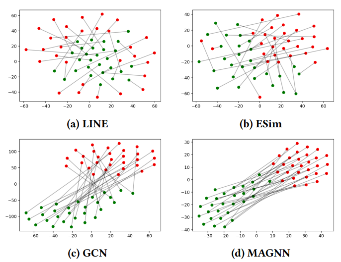